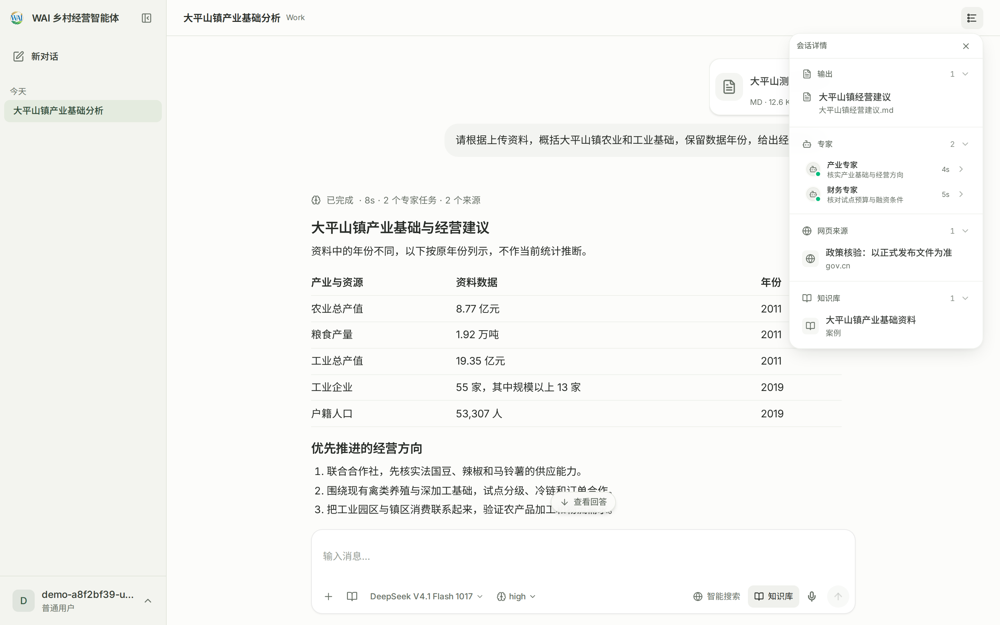
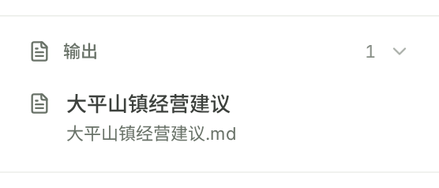

界面与基本操作
会话详情
#概述
一次规划或论证，会产生报告、专家意见和多条来源。这些成果和依据散落在对话里，交付前逐项核对很费时间。
会话详情把它们集中放在右侧，并且一直停在那里，不会随着对话滚动消失。

#显示条件
会话详情只在有内容时出现。本轮对话产生了下面任意一种东西，右侧就会出现这个面板：
- 助手交付的文件
- 参与分析的专家
- 联网搜索或知识库的来源
只是简单问答、没有这些内容时，不显示面板。
#打开和关闭
- 对话页标题栏右端有一个图标，鼠标放上去提示「切换会话详情」。点它打开或收起面板。
- 面板标题是「会话详情」，右上角的 × 同样可以收起。
- 屏幕宽度足够时，面板嵌在对话右侧，不遮挡对话；屏幕较窄时，以浮层的形式出现。
#四个区块
面板有四个区块，从上到下依次是输出、专家、网页来源、知识库。没有内容的区块不显示。每个区块的标题行右侧显示数量，点标题行可以折叠或展开这个区块。区块里先显示前几项，其余点「查看全部」展开。
#输出
输出是助手交付给你的文件，比如 Work 写好的报告。

- 每个文件显示为一行，写着文件名。
- 点一个文件，页面打开文件预览，可以阅读全文，并下载或导出。详见 Work。
- 文件较多时先显示前 3 个，点「查看全部 N 个文件」显示其余。
#专家
专家是参与分析的专家。 Work 中，主顾问把部分工作交给专家，这些专家列在这个区块。
- 每位专家显示一行，写着专家名称、状态和任务。先显示前 4 位，点「查看全部 N 位专家」展开。
- 点一位专家，右侧打开这位专家自己的对话：领到的任务、用了什么资料和工具、得出的结论都在里面。详见 Work。
#来源
来源是回答引用的材料。 联网搜索引用的网页，和知识库引用的条目，都汇总在这里。

- 每个来源显示为一条，写着标题。标题下面标明出处：网页显示网站域名，知识库条目显示「知识库」。
- 点网页来源，在新窗口打开原网页。
- 点知识库来源，查看知识条目的内容。
- 标题行右侧显示来源总数。先显示前 4 条，点「查看全部 N 个来源」展开。
#按目的查找
| 你想做什么 | 看哪个区块 | 怎么做 |
|---|---|---|
| 找到助手写好的报告 | 输出 | 点文件名，预览，再下载或导出 |
| 看专家分析进度 | 专家 | 看专家的状态，或点开专家对话 |
| 了解某个专家怎么得出结论 | 专家 | 点专家名，读这位专家的对话 |
| 核对政策或数据的原文 | 来源 | 点来源，打开原网页或知识条目 |
| 一次看清引用了多少材料 | 来源 | 看标题行右侧的总数 |
「来源」区块汇总整段对话检索到的全部材料，数量可以很多，例如一次联网搜索可以显示「67 个来源」。展开过程区，还能看到每一次搜索各自的来源。